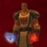

Joué par :
sanosuke85 Joué par :
[ Information masquée ] Age : 29
Lieu de naisance : Inconnu
Signe de naissance : Panthère...
Sexe : Homme
Race : Humain
Faction : Alliance
Formation : Voleur
Niveau : 60
Guilde : Ombre et Lumière Artisanat 1 : Enchanteur
Artisanat 2 : Dépeceur
Informations hrp : ( Voici mon voleur lvl 60, mon premier personnage du jeu... Je jouais déjà à la Beta avec un voleur qui avait pour nom Sanosukesan. Celui-ci est une sorte de suite de mon premier personnage. Tharkal a créé la guilde avec Vladlapinrus, un ami irl qui m'a fait connaître le jeu. Ce personnage restera à jamais gravé en moi car : 1- il m'a fait connaître beaucoup de monde dont ceux de ma guilde 2- c'est mon premier personnage 60 ^^ 3- grâce à lui j'ai rencontré ma compagne qui est aussi une joueuse (ce n'est pas Tendresse ^^) et on vit ensemble à présent (encore merci aguilar et Blizzard qui ont mis en première page l'event de mariage Thrarkal et Tendresse et qui a permis cela ^^).
Voilà donc un personnage qui me tient à coeur... Et de plus beaucoup de rp développé avec lui, et qui continue encore et toujours à évoluer - en dernière nouvelle il est redevenu le chef de la guilde et a des objectifs bien définis côté rp...)
Description : Si je suis Maître d'Ombre aujourd'hui... Ce n'est pas un hasard... Retraçant mon passé... Je me rend compte que bien des choses manquent à ma personne... Une partie de mon histoire... Une partie de ma vie... Qui sera peut-être décisive... Dans le destin qui m'attend...
Mais une bonne partie de ma vie se retrouve écrite sur mon journal...
* prend un livre dans une de ses sachoches, et l'ouvre lentement, une lueur étrange dans les yeux... Ténébreuse... *
Troisième Ère [1]
Lune de la Force
Décade du Panda
Décade du Gorille
Décade de l'Ours
Lune d'Agilité
Décade du Tigre
Décade du Singe
Décade du Faucon
Lune de l'Esprit [1]
Décade de la Chouette
Décade de la Baleine
Décade du Lapin [1]
Histoire de Tharkal
Si les ombres sont souvent vues comme appartenant aux ténèbres, elles ne sont pas toujours affilées au chaos et à l'enfer. Dans le cur de chacun, l'Ombre subsiste, sous divers noms, sous diverses formes : la haine, la solitude, la mélancolie, la colère Mais si l'on sait reconnaître sa juste valeur, elle peut devenir une alliée, une amie, une aura bénéfique et salvatrice Si on sait la dominer, la servir et l'apprécier.
C'est à cela que mon enfance a servie. Bercée dans le traditionnel code d'honneur des voleurs, mes parents m'ont formé afin de reconnaître l'Ombre à sa juste valeur, savoir lui demander son aide, et la servir. Entraînements rigoureux, mois de solitude dans des caves hermétiques à la lumière du soleil et de la lune, mes yeux ont appris à observer les formes du néant, et à les comprendre. Mon cur s'est ouvert aux ténèbres, tout en gardant ses sentiments de lumière, là où bon nombre de voleurs peuvent échouer au sein de ma famille.
Je ne peux dire que je fus le plus brillant des élèves de notre école, mais je fus reconnu comme faisant partie de la « famille », l'ordre des Ombres Frappantes. Toute ma famille en faisait partie, et avait pour but unique de servir l'Alliance, de la protéger et de mourir pour elle. Pourquoi ? Je ne le sais pas, mais on nous apprend à obéir au code d'honneur, non à le comprendre ou le réfléchir.
Je me souviens que mon frère aîné aimait se moquer de moi, car j'avais souvent pour habitude de préférer me camoufler plutôt que de combattre, afin de partir silencieusement vers les alentours apaisants, lorsque je n'étais pas en formation dans les caves. L'Ombre m'avait apprivoisée, tout comme je l'avais fait avec elle.
C'est à mes vingt-quatre ans, le soir de mon anniversaire, que mes parents vinrent me voir dans ma chambre, en tenue officielle, de voleurs Se cachant dans la pénombre, mon père prit une voix grave pour m'annoncer ce qui allait changer mon existence, et mon destin.
Ecoutant les mots sortant de sa bouche, incompréhensifs au départ puis de plus en plus clairs, je compris que mon passé n'était qu'illusion. J'étais adopté, et les personnes devant moi n'étaient pas mes vrais parents. Mon père me narra qu'ils m'avaient trouvé non loin de notre village, seul. Un message était accroché sur mon torse : « cet enfant est le descendant des serviteurs de l'Ombre ; élevez-le dans l'Ombre, et apprenez lui ce qu'est la vengeance, afin de l'accomplir pour nous, tués dans les raids de Thrall pour libérer ses compagnons et par le fléau qui s'est abattu sur les terres du nord, libéré par le sire Arthas Et que l'esprit de notre famille puisse vivre à jamais dans son cur. »
Me tendant le parchemin, mon esprit était confus en le prenant : tout cela n'était donc pas un rêve, ni même une démence. La réalité était bien présente, non fuyante. J'étais perdu Il m'expliqua qu'il m'éleva toujours dans cette optique, d'où mes exercices quotidiens de l'Ombre. Puis ses dernières paroles retentirent, gravées à jamais en moi : « Mon enfant, je ne peux plus t'appeler mon fils à présent, puisque tu sais la vérité. Je t'ai appris à connaître et te faire connaître de l'Ombre jusqu'à présent, et maintenant, je t'apprends ce qu'est la haine, la colère et la vengeance par ces paroles. Ton destin est tracé dans le code des voleurs, par le devoir de venger les tiens. Pars sur le champs pour Stormwind, cité de l'alliance et des humains, afin de parfaire notre art et de te fondre dans ce monde en dehors du notre. Tu es banni de notre village, maintenant que la vérité est inscrite en toi. Tu n'es pas des nôtres, tu ne dois plus rester avec nous. Si tu dois avoir de la rancur, ne la focalise pas sur nous, mais sur tes réels ennemis : les tueurs de tes parents, Thrall, Arthas, et tous ceux qui sont à leur service.. Bats toi pour garder ton honneur et tu seras reconnu de tous Que l'Ombre te préserve Et à présent, vas ».
Pendant ce temps, ma mère, du moins la femme qui m'avait adoptée, avait préparé mes affaires, dans un sac. Ce n'était pas de l'humour, ils étaient sérieux. Je devais partir, les laisser, et accomplir mon destin de vengeance.
La haine monta dans mon esprit, vis à vis d'eux certes, mais surtout contre la réalité en elle-même. J'ai été bercé dans le code d'honneur des voleurs, et voilà qu'il resserrait ses griffes sur moi, en me forçant à agir dans son sens. Je ne pouvais refuser de venger les miens, même si l'envie était présente. Mais aucun choix ne m'était accordé J'étais lié, et ce depuis mon enfance finalement Mon cur s'obscurcie alors cette nuit là, maudissant Thrall et Arthas, qui, comme ma famille d'adoption, avaient créé les chaînes de mon existence. Un cercle sans fin tournait dans ma tête Ma famille d'origine, morte par ces deux immondes êtres et leurs sbires C'était elle qui avait commandité mon emprisonnement dans ce destin sans joie, rempli de haine et de vengeance. Et enfin ma famille d'adoption qui m'avait créée, formée, pour accomplir mon devoir hérité sur ce maudit morceau de papier, et que je ne pouvais refusé, sous peine de renier ma vie en elle-même
Des larmes coulèrent le long de mon visage, des larmes amers et de détresse. Mais mes parents adoptifs avaient déjà disparus dans l'ombre, laissant la porte ouverte comme signe de départ. Tout était définitif, je devais partir accomplir ce fardeau
Serrant les dents, je pris mes affaires et sorti. Dehors, je fus toujours seul, levant les yeux et contemplant la lune, si mystérieuse car éclairant d'une lueur si pâle et sombre, mais suffisante pour voir Je pris le chemin sortant du village, arrivant alors à sa sortie. Je me retournai pour faire mes adieux Et c'est là que je compris, voyant un groupe de voleur se formant pour une mission sans doute
Ils étaient là, vide d'esprit et de choix, devant le chef qui donnait les ordres. Voilà ce à quoi j'étais aspiré à devenir si j'étais resté ici. Ce soir là, mes parents m'apprirent la vérité sur mon passé, me laissant une chance de venger mes ancêtres. De plus, ils m'offrirent comme cadeau d'anniversaire ce que j'avais toujours rêvé : la liberté de choisir Choisir comment construire ma vengeance, et voyager au fil du temps, lié par ce destin, mais libre de voir quels chemins prendre pour y parvenir. Et si je désirais ne jamais accomplir cette vengeance, libre à moi Je pouvais renier mon existence et tout abandonner. Mais je ne le désirais pas J'ai choisi la voie de l'honneur, et j'assumerai ce choix
Mais dans cet instant de compréhension, une lourde douleur me pinça le cur : j'étais seul, face à ce dessein Je ne pouvais plus compter sur les seules personnes que je connaissais Un objectif et l'Ombre, c'est tout ce qui me restait
C'est dans cet état d'esprit que je partis pour Northshire, non loin de Stormwind. C'est dans ce lieu que je commençai à parfaire mon art de voleur et d'assassin, tout en me forgeant une renommée dans l'Alliance
Mes objectifs étaient clair à présent : détruire les ennemis de mes ancêtres, afin de d'agir dans le code d'honneur des voleurs, tout en gardant ma liberté Je devais utiliser l'Alliance afin d'arriver à mes fins, en la laissant m'utiliser. Depuis ce temps, la haine a grandi en moi et l'esprit de vengeance, apportés par mes devoirs, mais aussi par cette solitude qui me pèse, cette vision d'une famille sans visage qui me laisse un fardeau incontournable, mais dont j'ai choisi de m'acquitter. Mon cur est partagé entre divers sentiments, et c'est en cela que mon esprit souffre. J'ai pitié pour mes ancêtres, mais aussi de la haine pour ce qu'ils m'ont laissé. J'ai un sentiment de redevance envers ma famille d'adoption, de m'avoir fait connaître l'Ombre, ma seule amie réelle, mais je les maudis pour m'avoir inculqué cette chaîne qu'est le code des voleurs. Un choix a été fait, mais je devrais prendre du temps pour l'assumer pleinement, afin qu'il arrête de me consumer de l'intérieur
Mais par dessus tout, mon cur est obscurci par ce désir de vengeance, face à ces deux êtres qui on créé ce conflit en moi, ces sensations de peine et de douleur la horde et la légion, ces deux instances qui sont la cause de tout Je dois les retrouver et les anéantir, afin d'enlever ce fardeau qu'est le mien, et d'apaiser ma conscience
Dans les dernières nouvelles, Arthas a été localisé à Northrend. Je dois forger des troupes, pour l'anéantir, tout comme Thrall. L'Alliance est à mes côtés, tout comme je la soutiens pour mes intérêts personnels. Mon premier contact au sein de l'alliance fut Vladlapinrus, qui est devenu mon meilleur partenaire de combat : un paladin d'une efficacité redoutable. Son désir de destruction de la légion rejoint mes ambitions, ce qui fait notre force. Ensemble, nous avons créé « Ombre et Lumière », une guilde composé d'amis faits au travers des combats pour l'Alliance. Petit à petit, mon cur s'est orienté légèrement vers la Lumière par ce regroupement, et depuis peu surtout par une rencontre inattendue et douloureuse dans un sens : Tendresse, une paladine, avec qui je vais me marier Mon cur s'est adouci par l'amour d'une femme Et créant en moi un bonheur sans nom.
Cependant, l'Ombre de la vengeance pèse toujours sur moi, ainsi que mon éthique de voleur Et je sais à présent, que je ne pourrai jamais oublier ce pour quoi je me bats depuis tout ce temps, depuis cet anniversaire Même si la lumière parvient à percer les ténèbres de mon cur, elle ne pourra jamais en devenir le maître Du moins jusqu'à ce que mon destin soit accompli
Mais d'ici là, la mort aura eu le temps de me rattraper un bon nombre de fois, moi, Tharkal, le maître d'Ombre...